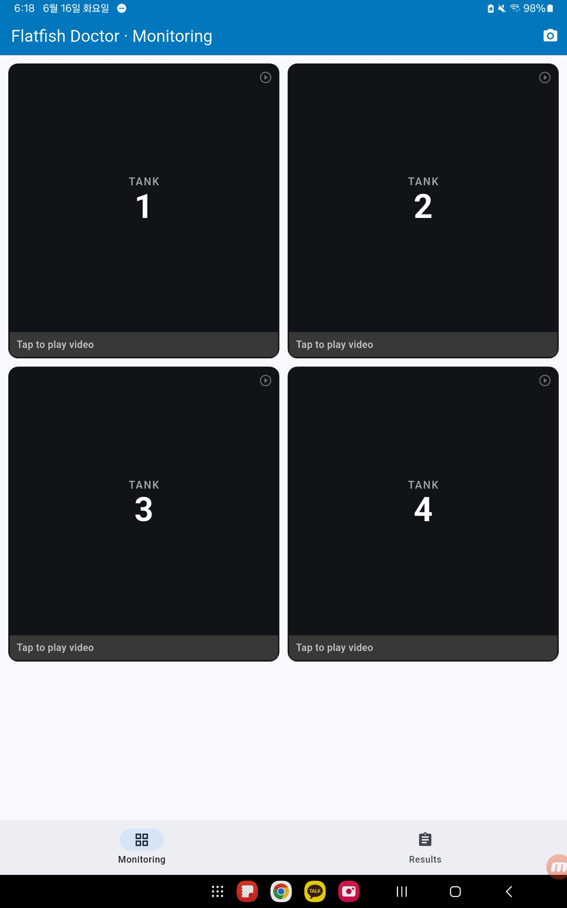
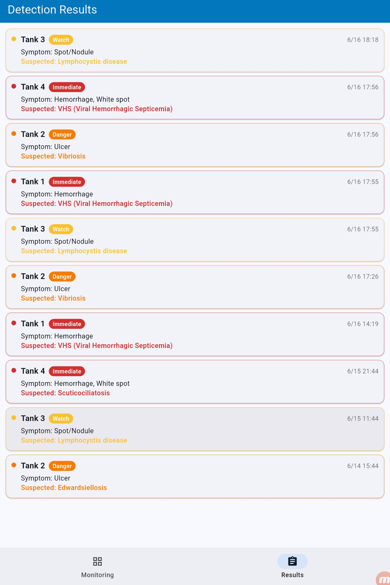

넙치 증상 탐지 / Flatfish doctor
넙치 개체 탐지와 7종 외형 상태 분류를 앱으로 연결했습니다. 증상 분류의 최고 검증 Top-1은 87.68%입니다.

프로젝트 한눈에 보기
넙치 외형 증상 모니터링
- 직접 담당
- 데이터 전처리, 탐지·분류 학습, 추론 API·앱
- 분류 검증
- Top-1 87.68% · 7개 클래스
- 별도 탐지 지표
- mAP50 0.4455
- 사용 기술
- YOLOPyTorchOpenCVFastAPIFlutter
프로젝트 소개
수조의 이미지에서, 개체별로 확인할 수 있는 결과까지.

물결·조명·겹친 개체가 섞인 전체 프레임에서는 어느 물고기의 증상인지 연결하기 어렵습니다. 저는 개체 탐지 → 크롭 → 7종 외형 상태 분류로 작업을 나누고, 결과를 원본 위치로 돌려주는 앱까지 연결했습니다.
담당 범위는 라벨 전처리, 탐지·분류 학습, 추론 API와 좌표 변환, Flutter 결과 화면입니다. 질병명·대응 안내는 증상에 따른 규칙 매핑이며 영상만으로 병원체를 확진하는 모델은 아닙니다.
앱 시연 입력에는 AI 생성 영상이 포함됩니다. 실제 양식장 실증이나 질병 조기 발견 효과의 근거로 사용하지 않습니다.
핵심 난제 · 개체별 분석의 신뢰성
탐지부터 분류·화면까지, 같은 개체의 결과를 유지하려면?
- 무엇이 어려웠나
- 물결·조명·겹침이 있는 프레임에서는 개체를 놓칠 수 있고, 크롭의 증상 분류 점수가 좋아도 탐지에서 빠진 물고기는 분석할 수 없습니다. 최종 앱에서도 예측값과 원본 위치가 일치해야 했습니다.
- 왜 이 방법을 선택했나
- 탐지 → 개체별 크롭 → 증상 분류 → 원본 좌표 표시로 단계를 나누고, 라벨·학습 분포·단계별 지표·좌표 변환을 각각 확인했습니다.
해결 과정

AI Hub의 개체·증상 라벨을 크롭에 연결하고 매핑되지 않는 라벨은 제외했습니다. 학습에는 클래스별 상한을 적용해 쏠림을 줄이되, 평가 분포가 바뀌지 않도록 검증 데이터는 유지했습니다.
분류의 최고 검증 Top-1은 87.68%였지만 탐지 mAP50은 0.4455였습니다. 두 지표를 종합 정확도처럼 합치지 않고, 겹침·탁한 수조에서 개체를 놓치는 앞 단계가 결과를 제한한다는 점을 따로 봤습니다.
예측값과 화면의 물고기가 같은 개체를 가리키도록.

모델 좌표를 원본 이미지와 앱 화면으로 변환하고, 위치·증상·신뢰도를 함께 전달했습니다. 사용자가 개체별 결과와 수조별 기록을 확인할 수 있도록 FastAPI 응답을 Flutter 화면에 연결했습니다.
잘 나온 모델 점수만으로 파이프라인을 평가하지 않게 됐습니다. 앞 단계의 누락이 뒤 단계에 전달할 입력 자체를 없애는지 먼저 확인해야 했습니다.
결과와 배운 점
전처리부터 사용자 화면까지, 같은 대상을 보존합니다.
라벨의 의미, 탐지된 개체, 크롭 분류와 표시 좌표가 연결되어야 결과를 설명할 수 있었습니다. 학습 데이터 조정과 검증을 분리하고, 단계별 병목과 최종 화면의 대응을 함께 확인하는 기준을 얻었습니다.
코드와 근거
구현과 판단의 근거를 함께 남깁니다.
YOLO / PyTorch / OpenCV / FastAPI / Flutter
2026.11.03 검토 · 개인 기여와 팀 성과, 완료한 실험과 진행 중인 연구를 구분했습니다.